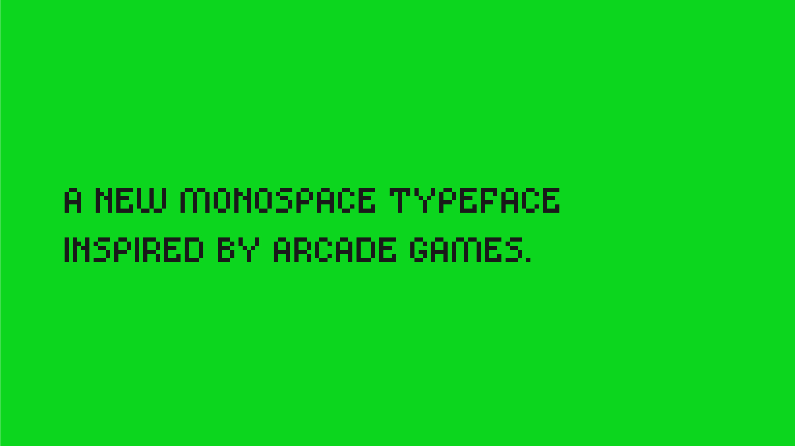
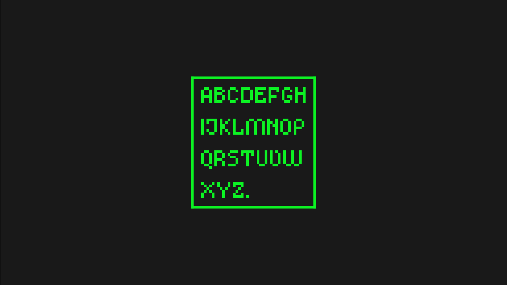
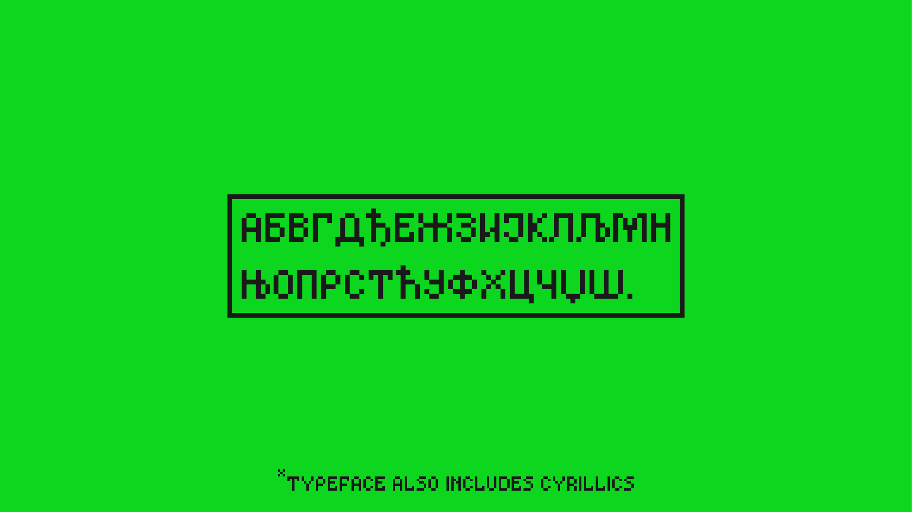

niks božović
/ ovaj font je bio inspirisan 8 bit video igrama i čitavom 8-bit estetikom koju je imao sajt sobakaista. btw sobakaisti su bili jedna strava literoigra iz gornjeg milanovca, arg praktično. /
instagram


